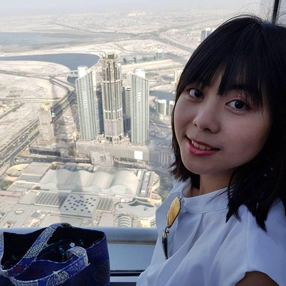

About
Hey, nice to see you here!

Hello! I am Yi-Chun, an aspiring UX professional based in Michigan. My goal is to translate people’s needs into streamlined experience solution.
Some fast facts about me:
• First year master’s student at University of Michigan School of Information Science
• Former marketing & PR specialist, language instructor, and linguistics research assistant
• My other goals: cook & eat well + learn skateboarding.
You can also learn more about what I have done in my resume.